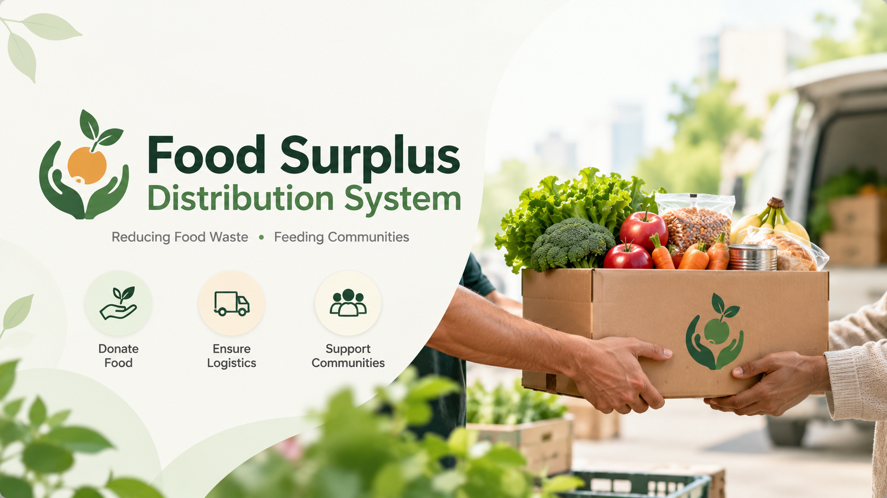

01Food Surplus
Distribution System
A platform connecting food donors with orphanages, old-age homes, and NGOs. Includes donor, receiver, logistics, and volunteer-driven distribution workflows.
JavaMySQLHTML / CSSBootstrap